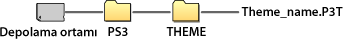

Ayarlar > Tema Ayarları
Tema Ayarları
Ekran metninin arkaplanı veya yazı tipi gibi öğeler için XMB™ ekranını özelleştirmek için ayarlar yapın.
Tema
XMB™ ekranında görüntülenen simgeler veya arkaplan gibi öğelerin tasarımını özelleştirmek için ayarlar yapabilirsiniz. Tema aşağıdaki yöntemler kullanılarak ayarlanabilir.
Önceden yüklü tema seçme
PS3™ sisteminde önceden yüklenmiş bir tema seçin.
PS3™ sistemine bir tema indirme
 (PlayStation®Store)'dan veya
(PlayStation®Store)'dan veya  (İnternet Tarayıcısı) kullanarak bir tema indirdiğinizde indirme tamamlandıktan sonra otomatik olarak PS3™ sistemine yüklenir.
(İnternet Tarayıcısı) kullanarak bir tema indirdiğinizde indirme tamamlandıktan sonra otomatik olarak PS3™ sistemine yüklenir.
Bir oyun diski veya satın alınarak kullanılabilen Blu-ray Disc video yazılımı (BD-ROM) kullanılarak bir tema yükleme
Disk ortamında bulunan bir tema dosyası yüklemek ve kullanmak için,  (Oyun) altında
(Oyun) altında  simgesini seçin ve sonra yüklemek istediğiniz tema dosyasını seçin. Tema, yükleme tamamlandıktan hemen sonra sistem teması olarak kullanılır.
simgesini seçin ve sonra yüklemek istediğiniz tema dosyasını seçin. Tema, yükleme tamamlandıktan hemen sonra sistem teması olarak kullanılır.
Bir tema oluşturma veya PC'ye yükleme
Bir Web sitesinden bir tema indirdiğinizde veya bir PC kullanarak bir tema oluşturduğunuzda, depolama ortamında [PS3] - [THEME] adında yeni bir klasör oluşturun ve sonra temayı bu klasörde depolayın. Tema dosyaları [.P3T] uzantısıyla kaydedilmelidir.

Temayı PS3™ sisteminin sistem depolama alanına yüklemek için, tema dosyasını içeren depolama ortamını sisteme bağlayın ve sonra  (Ayarlar) >
(Ayarlar) >  (Tema Ayarları) > [Tema] > [Kur] öğesini seçin.
(Tema Ayarları) > [Tema] > [Kur] öğesini seçin.
İpuçları
- Tema dosyasının bir parçası olmayan bir simge tema dosyasında başka bir simgeyle değiştirilecektir veya varsayılan XMB™ ekranı simgesi olarak kalacaktır.
- Tema dosyası birden fazla arkaplan içeriyorsa, tema arkaplanı rastgele değişir.
- PS3™ sisteminde kullanmak için Kendi tema dosyalarınızı oluşturmanızı sağlayan PC yazılımı kullanılabilir. (Grafik öğeler oluşturmak için satın alınarak kullanılabilen yazılım da gerekir.) Ayrıntılı bilgi için bölgenize ait SIE Web sitesini ziyaret edin.
- Depolama ortamını PS3™ sisteminin bazı modelleriyle kullanmak için bir USB adaptörü (birlikte verilmez) gerekir.
Temaları silme
Silmek istediğiniz temayı seçin,  düğmesine basın ve sonra [Sil] öğesini seçin.
düğmesine basın ve sonra [Sil] öğesini seçin.
Renk
XMB™ ekranının arkaplan rengini ayarlayın.
| Orijinal | Orijinal arkaplan rengini ayarlayın. |
|---|---|
| (renk örneği) | Arkaplan rengi olarak ayarlamak için bir renk seçin. |
Arka plan
 (Fotoğraf) altından temada veya duvar kağıdı olarak seçilen görüntüde kullanılan arkaplan rengini XMB™ ekranının arkaplanı olarak ayarlayın.
(Fotoğraf) altından temada veya duvar kağıdı olarak seçilen görüntüde kullanılan arkaplan rengini XMB™ ekranının arkaplanı olarak ayarlayın.
| Parlaklık | Arkaplanın rengini değiştirin. |
|---|---|
| Orijinal | Orijinal temaya ayarlayın. |
| Klasik | [Klasik] temaya ayarlayın. |
| (tema adı) | [Tema] altında ayarlanan temanın arkaplanını kullanmak için ayarlayın. |
| Duvar kağıdı | Arkaplan için (Fotoğraf) altında duvar kağıdı olarak seçilmiş görüntüyü ayarlayın. |
Yazı tipi
XMB™ ekranında veya  (Arkadaşlar) altındaki mesajlarda kullanılacak yazı tipini ayarlayın. Sistem dili Kore dili, basitleştirilmiş Çince karakterler veya geleneksel Çince karakterler olarak ayarlandığında, bu ayar seçilemez.
(Arkadaşlar) altındaki mesajlarda kullanılacak yazı tipini ayarlayın. Sistem dili Kore dili, basitleştirilmiş Çince karakterler veya geleneksel Çince karakterler olarak ayarlandığında, bu ayar seçilemez.
İpucu
Seçilebilen yazı tipleri kullanılan sistem diline göre değişir.